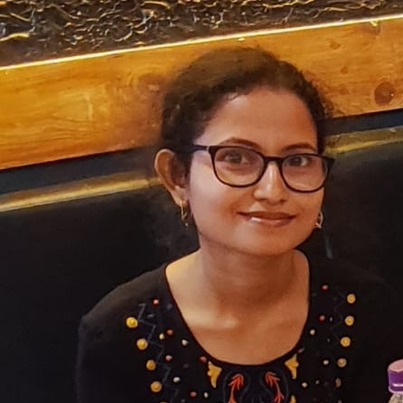

About
Momentum MSCA Fellow · Konkoly Observatory
Nice to meet you! I am Mami (Maw-mi), an astrophysicist studying variable stars and their applications to stellar astrophysics, galaxy structure, and cosmic distances. My work combines observational data—particularly archival photometry—with theoretical stellar models to investigate classical pulsators and their host galaxies.
Classical pulsators are valuable distance indicators because they follow period–luminosity relations. I use these relations to investigate the three-dimensional structure of their host galaxies, alongside questions about pulsation, convection, and stellar properties.
My academic path began with a B.Sc. in Physics at Nalbari College and an M.Sc. in Physics, specializing in Astrophysics and Cosmology, at Gauhati University in Assam, India. I also enjoy teaching and outreach, making art, and exploring places with rich architectural history.
Research interests
- Pulsating variable stars
- Eclipsing binaries
- Stellar astrophysics
- Galactic structure and evolution
- Extragalactic distances
Selected publications
Refereed articles
- M. Marconi, R. Molinaro, V. Ripepi, G. De Somma, T. Sicignano, M. Deka, M. Di Criscienzo, E. Luongo, I. Musella, and E. Trentin. New theoretical predictions on Type II Cepheids: towards a self consistent Pop. II distance scale. Astronomy & Astrophysics.
- K. Kurbah, S. M. Kanbur, S. Deb, A. Bhardwaj, M. Deka, S. Das, G. Bhuyan, and E. P. Bellinger. Multiwavelength study of observed and predicted pulsation properties of first overtone Cepheids in the Magellanic Clouds. Monthly Notices of the Royal Astronomical Society, 541(3), 2594–2618 (2025).
- M. Deka, F. Ahlborn, T. A. M. Braun, and A. Weiss. Implications of a turbulent convection model for classical Cepheids. Astronomy & Astrophysics, 699, A351 (2025).
- M. Deka, E. P. Bellinger, S. Kanbur, S. Deb, A. Bhardwaj, H. R. Randall, S. Kalici, and S. Das. Bridging theory and observation in stellar pulsation models: The impact of convection and metallicity on instability strip boundaries for Classical and Type-II Cepheids. Monthly Notices of the Royal Astronomical Society, 530(4), 5099–5119 (2024).
- G. Bhuyan, S. Deb, S. Kanbur, E. P. Bellinger, M. Deka, and A. Bhardwaj. Geometry of the LMC based on multi-phase analysis of multi-wavelength Cepheid light curves using OGLE-IV and Gaia DR3 data. Monthly Notices of the Royal Astronomical Society, 527(3), 8671–8686 (2024).
- K. Kurbah, S. Deb, S. M. Kanbur, S. Das, M. Deka, A. Bhardwaj, H. R. Randall, and S. Kalici. A multiphase study of theoretical and observed light curves of classical Cepheids in the Magellanic Clouds. Monthly Notices of the Royal Astronomical Society, 521(4), 6034–6052 (2023).
- M. Deka, S. M. Kanbur, S. Deb, S. Das, K. Kurbah, E. P. Bellinger, and A. Bhardwaj. Period-Colour and Amplitude-Colour relations for OGLE-δ Scuti stars in the Galactic Bulge and LMC. Monthly Notices of the Royal Astronomical Society (2022).
- M. Deka, S. Deb, and K. Kurbah. An MCMC approach to the three-dimensional structure of the Milky Way bulge using OGLE-IV δ Scuti stars. Monthly Notices of the Royal Astronomical Society, 514(3), 3984–3992 (2022).
Conference proceedings
- M. Deka, S. M. Kanbur, S. Deb, and S. Das. A Study of Stellar Photosphere–Hydrogen Ionization Front Interaction in δ Scuti Stars.
- K. Kurbah, S. Deb, S. M. Kanbur, S. Das, M. Deka, A. Bhardwaj, H. R. Randall, and S. Kalici. A multiphase study of classical Cepheids in the Magellanic Clouds—Models and Observations.
Career highlights & conferences
Momentum MSCA Fellow
Konkoly Observatory
2023 · Kavli Summer Program in Astrophysics
Selected for “The lives, deaths and afterlives of interacting stars,” organized by the Max Planck Institute for Astrophysics, Garching, Germany.
2023 · International Astronomical Union Symposium 376
International travel grant from the Science and Engineering Research Board, Government of India. Oral presentation on the interaction between the stellar photosphere and hydrogen ionization front in δ Scuti stars.
2024 · 42nd meeting of the Astronomical Society of India
Indian Institute of Science, India. Oral presentation: “The impact of convection and metallicity on instability strip boundaries of Classical Cepheids.”
2023 · North East Meet of Astronomers (NEMA–IX)
Mizoram University, India. Oral presentation on the impact of convection and metallicity on instability strip boundaries of Classical Cepheids.
2023 · MPA–Kavli Summer Programme in Astrophysics
Max Planck Institute for Astrophysics, Garching, Germany. Oral presentation on a new turbulent-convection model and its implications for Cepheid models.
2023 · 41st meeting of the Astronomical Society of India
Indian Institute of Technology, Indore. Poster presentation on the HIF–stellar photosphere interaction theory in δ Scuti stars.
2022 · Indo-French Astronomy School
IUCAA, Pune, India. Oral presentation on the chemical composition of neutral gas in a distant galaxy.
2022 · National Conference on Physical Science
Dibrugarh University, Assam, India. Oral presentation on galactocentric distances using Galactic bulge RR Lyrae stars.
Other distinctions
- Qualified the Assam State Level Eligibility Test (2021).
- Qualified GATE (2020) and CSIR-NET-LS in Physical Science (2019, 2020); All India Rank 70 in 2019.
- NEC Merit Scholarship recipient (2016–2018).
Research schools
- 2023 · IAU International Spring School, “Modern Methods of Cosmic Distance Determination,” Konkoly Observatory, Budapest, Hungary.
- 2022 · Indo-French Astronomy School on spectroscopy, jointly organized by Lyon institutions and IUCAA.
- 2018 · Pulsar Astronomy with uGMRT Boot-Camp & Multi-Wavelength Neutron Star Workshop, BITS Pilani, Hyderabad Campus.
Teaching & outreach
IUCAA Refresher Course & Summer School (2024)
Getting Started with MESA: introduction and hands-on session, Pune, India.
Pedagogic Workshop on Astronomy, Astrophysics, and Cosmology (2024)
MESA tutorial and hands-on session, Gauhati University, India.
Teaching Assistant · Higher Secondary Physics Laboratory (2023)
Cotton University, India.
MESA-RSP tutorials (2022)
Introduction and hands-on tutorial with Prof. Shashi Kanbur at the Indian Institute of Astrophysics; postgraduate astrophysics tutorial at Cotton University.
Teaching Assistant · Physics (2019)
Nalbari College, India. Undergraduate and higher-secondary courses included classical mechanics, thermodynamics, mathematical physics, optics, magnetism, and laboratory practicals.
Computational skills
Data & programming
Experience with OGLE, Gaia, TESS, Kepler, and ASAS-SN data. Programming: Python, IDL, Bash, R, and FORTRAN.
Methods & tools
MCMC, Bayesian analysis, F-tests, MESA, Phoebe, IRAF, VOSA (SED fitting), DS9, OpenMP, MPI, high-performance computing, machine learning, LaTeX, and Microsoft Office.
Students supervised
Krisha Soni · High school student
Co-supervised with Prof. Shashi M. Kanbur, The Bronx High School of Science, USA (2023–present).
Lucas Mac · High school student
Co-supervised with Prof. Shashi M. Kanbur, The Bronx High School of Science, USA (2023–present).
Anurag Baruah · MSc project
Co-supervised with Dr. Sukanta Deb, Cotton University, India (2022–2024).
Hugh Riley Randall · Undergraduate student
Co-supervised with Prof. Shashi M. Kanbur, State University of New York, USA (2022).
Liza Devi · MSc project
Co-supervised with Dr. Sukanta Deb, Cotton University, India (2021–2023).
Snigdha Sarmah · MSc project
Co-supervised with Dr. Sukanta Deb, Cotton University, India (2021–2023).
Contact
Institute: mami.deka@cfsk.org
Personal: mamideka8@gmail.com